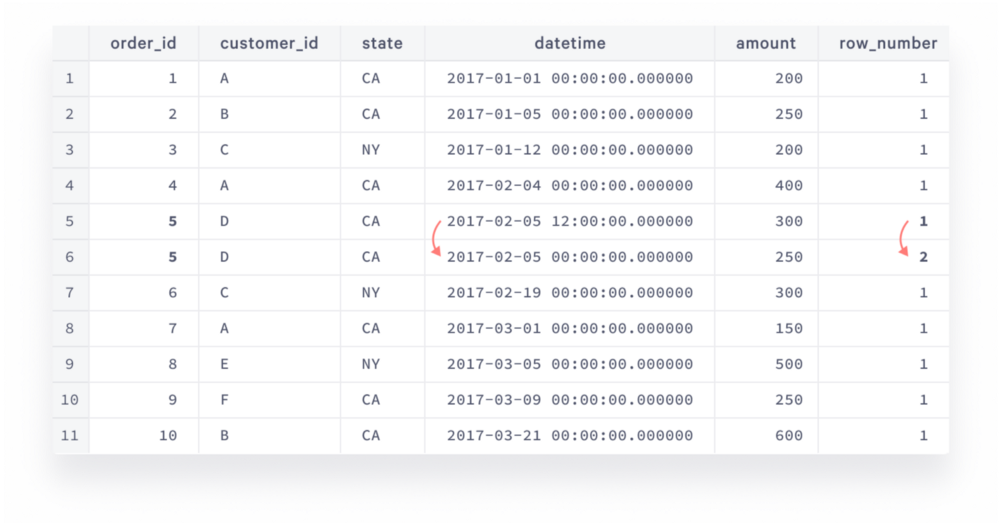
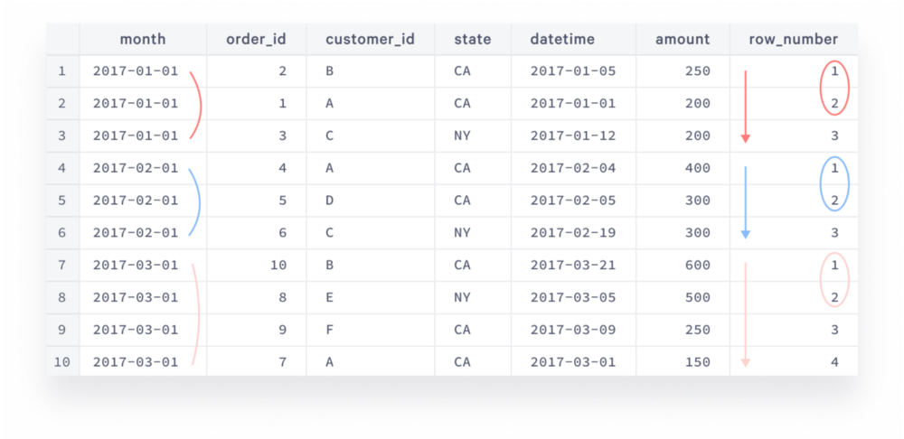
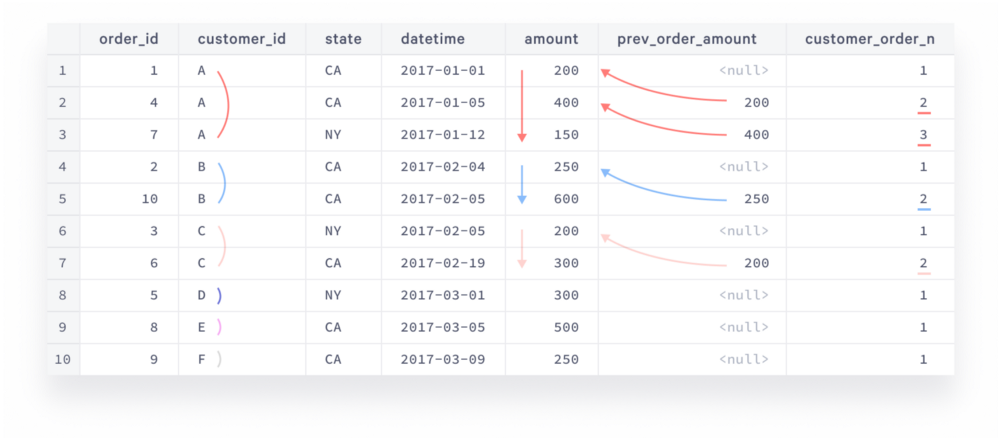

教程：使用SQL窗口函数做商务分析
原文 statsbot 是一家商业智能公司，本文翻译自它的博客，原文使用PostgreSQL，本文改用MySQL（语法和原文略有不同，并且要求MySQL8），并补上了创建测试数据的sql，方便学习。
注 本文的sql都非常复杂，我估计性能也高不到哪去，非常不适合OLTP业务。
任何一个从事数据分析的人都有过这样的感叹，一个直观上很简单的方法，使用纯SQL解决却非常困难（例如：TOP N）。
如何计算每月的营收增长和总营收？我们可以相信计算结果吗？有没有重复数据的影响？如何找到每月的TOP N订单？所有这些问题都需要把商业语言转成编程语言。可以使用复杂的JOIN、数据导入excel、SQL存储过程等解决问题。窗口函数，让我们可以使用纯SQL解决问题，它更简单易读，更容易调试。
1 准备工作
1.1 安装启动MySQL
yum install https://repo.percona.com/yum/percona-release-latest.noarch.rpm percona-release setup ps80 yum install percona-server-server systemctl status mysqld # 首次启动 mysql8会把root密码写入日志，需要手动修改密码：alter user 'root'@'localhost' identified by '********' grep password /var/log/mysqld.log
1.2 准备数据
CREATE TABLE `orders` ( `order_id` int(11) NOT NULL, `customer_id` char(10) DEFAULT NULL, `state` char(2) DEFAULT NULL, `datetime` datetime DEFAULT NULL, `amount` int(11) DEFAULT NULL ) ENGINE=InnoDB DEFAULT CHARSET=utf8; INSERT INTO orders(order_id, customer_id, state, datetime, amount) VALUES (1, 'A', 'CA', '2017-01-01', 200), (2, 'B', 'CA', '2017-01-05', 250), (3, 'C', 'NY', '2017-01-12', 200), (4, 'A', 'CA', '2017-02-04', 400), (5, 'D', 'CA', '2017-02-05', 250), (5, 'D', 'CA', '2017-02-05 12:00:00', 300), (6, 'C', 'NY', '2017-02-19', 300), (7, 'A', 'CA', '2017-03-01', 150), (8, 'E', 'NY', '2017-03-05', 500), (9, 'F', 'CA', '2017-03-09', 250), (10, 'B', 'CA', '2017-03-21', 600);
这就是我们的测试数据集了：
| order_id | customer_id | state | datetime | amount |
|---|---|---|---|---|
| 1 | A | CA | 2017-01-01 00:00:00 | 200 |
| 2 | B | CA | 2017-01-05 00:00:00 | 250 |
| 3 | C | NY | 2017-01-12 00:00:00 | 200 |
| 4 | A | CA | 2017-02-04 00:00:00 | 400 |
| 5 | D | CA | 2017-02-05 00:00:00 | 250 |
| 5 | D | CA | 2017-02-05 12:00:00 | 300 |
| 6 | C | NY | 2017-02-19 00:00:00 | 300 |
| 7 | A | CA | 2017-03-01 00:00:00 | 150 |
| 8 | E | NY | 2017-03-05 00:00:00 | 500 |
| 9 | F | CA | 2017-03-09 00:00:00 | 250 |
| 10 | B | CA | 2017-03-21 00:00:00 | 600 |
2 营收增长
在商务中，月营收增长使用公式 100*(m1-m0)/m0 表示，m1是指定月份的营收，m0是它的前一月份的营收。你可以使用下面SQL计算出每个月的营收。
SELECT DATE_FORMAT(`datetime`, '%Y-%m-01') AS `month`, SUM(amount) AS revenue FROM orders GROUP BY `month` ORDER BY `month`
| month | revenue |
|---|---|
| 2017-01-01 | 650 |
| 2017-02-01 | 1250 |
| 2017-03-01 | 1500 |
你可以把数据导入excel计算，并做出趋势图。这里我们演示如何使用SQL解决。
WITH monthly_revenue AS ( SELECT DATE_FORMAT(`datetime`, '%Y-%m-01') AS `month`, SUM(amount) AS revenue FROM orders GROUP BY `month` ), prev_month_revenue AS ( SELECT t1.*, t2.revenue AS prev_month_revenue FROM monthly_revenue t1 LEFT JOIN monthly_revenue t2 ON TIMESTAMPDIFF(MONTH, t2.`month`, t1.`month`)=1 ) SELECT *, ROUND(100.0*(revenue-prev_month_revenue)/prev_month_revenue,1) AS revenue_growth FROM prev_month_revenue ORDER BY `month`
| month | revenue | prev_month_revenue | revenue_growth |
|---|---|---|---|
| 2017-01-01 | 650 | NULL | NULL |
| 2017-02-01 | 1250 | 650 | 92.3 |
| 2017-03-01 | 1500 | 1250 | 20.0 |
这里我们先计算月营收，然后自JOIN，这个解法没问题，只是 TIMESTAMPDIFF 的可读性不好。下面介绍如何使用窗口函数解决：
WITH monthly_revenue AS ( SELECT DATE_FORMAT(`datetime`, '%Y-%m-01') AS `month`, SUM(amount) AS revenue FROM orders GROUP BY `month` ), prev_month_revenue AS ( SELECT *, LAG(revenue) OVER (ORDER BY month) AS prev_month_revenue FROM monthly_revenue ) SELECT *, ROUND(100.0*(revenue-prev_month_revenue)/prev_month_revenue,1) AS revenue_growth FROM prev_month_revenue ORDER BY `month`
这两个SQL的结果一样，prev_month_revenue 子句用到了窗口函数。这里解释下 LAG ：
lag是窗口函数，获取前一行revenue是表达式，表示你想从前一行获取revenue字段over(order by month)是窗口规格，指定如何定义前一行，这里通过month排序定义行的顺序
窗口函数的结构基本如此： function (expression, [parameters]) OVER (window specification) 非常简单强大。例如，通过添加 partition by 窗口规格，可以把行分组，本例分别计算每个 state 的营收增长。
WITH monthly_revenue AS ( SELECT DATE_FORMAT(`datetime`, '%Y-%m-01') AS `month`, `state`, SUM(amount) AS revenue FROM orders GROUP BY `month`, `state` ), prev_month_revenue AS ( SELECT *, LAG(revenue) OVER (PARTITION BY state ORDER BY month) AS prev_month_revenue FROM monthly_revenue ) SELECT *, ROUND(100.0*(revenue-prev_month_revenue)/prev_month_revenue,1) AS revenue_growth FROM prev_month_revenue ORDER BY `month`, `state`
| month | state | revenue | prev_month_revenue | revenue_growth |
|---|---|---|---|---|
| 2017-01-01 | CA | 450 | NULL | NULL |
| 2017-02-01 | CA | 950 | 450 | 111.1 |
| 2017-03-01 | CA | 1000 | 950 | 5.3 |
| 2017-01-01 | NY | 200 | NULL | NULL |
| 2017-02-01 | NY | 300 | 200 | 50.0 |
| 2017-03-01 | NY | 500 | 300 | 66.7 |
通过第一个子句按州计算月营收，第二个子句按州计算上个月营收，第三个子句按州计算月营收增长。
3 流水总计
另一个常见问题是计算一段时间的流水，例如，计算到本月为止的总营收：
WITH monthly_revenue AS ( SELECT DATE_FORMAT(`datetime`, '%Y-%m-01') AS `month`, SUM(amount) AS revenue FROM orders GROUP BY `month` ) SELECT *, SUM(revenue) OVER (ORDER BY `month` rows BETWEEN unbounded preceding AND current row) AS `running_total` FROM monthly_revenue ORDER BY `month`;
| month | revenue | running_total |
|---|---|---|
| 2017-01-01 | 650 | 650 |
| 2017-02-01 | 1250 | 1900 |
| 2017-03-01 | 1500 | 3400 |
这里新出现的 rows BETWEEN unbounded preceding AND current row 称作 frame clause 它定义了感兴趣的行的子集（用于聚合函数），它的结构是 rows between frame_start and frame_end 。
frame_start 和 frame_end 取如下值，但是 frame_start 指定的行必须在 frame_end 前面：
unbounded preceding窗口第一行unbounded following窗口最后一行N preceding前N行N following后N行current row当前行
例如:
SELECT *, SUM(amount) OVER () AS amount_total, SUM(amount) OVER (ORDER BY order_id rows BETWEEN unbounded preceding AND current row) as running_sum, SUM(amount) OVER (PARTITION BY customer_id ORDER BY `datetime` rows BETWEEN unbounded preceding AND current row) as running_sum_by_customer, AVG(amount) OVER (ORDER BY `datetime` rows BETWEEN 5 preceding AND current row) as trailing_avg FROM orders ORDER BY order_id;
- amount_total 没有指定窗口，默认取所有行
- running_sum 按照订单ID排序，本订单和之前所有订单
- running_sum_by_customer 按每个客户分组，本订单和之前所有订单
- trailing_avg 最近5笔订单的均值
| order_id | customer_id | state | datetime | amount | amount_total | running_sum | running_sum_by_customer | trailing_avg |
|---|---|---|---|---|---|---|---|---|
| 1 | A | CA | 2017-01-01 00:00:00 | 200 | 3400 | 200 | 200 | 200.0000 |
| 2 | B | CA | 2017-01-05 00:00:00 | 250 | 3400 | 450 | 250 | 225.0000 |
| 3 | C | NY | 2017-01-12 00:00:00 | 200 | 3400 | 650 | 200 | 216.6667 |
| 4 | A | CA | 2017-02-04 00:00:00 | 400 | 3400 | 1050 | 600 | 262.5000 |
| 5 | D | CA | 2017-02-05 12:00:00 | 300 | 3400 | 1600 | 550 | 266.6667 |
| 5 | D | CA | 2017-02-05 00:00:00 | 250 | 3400 | 1300 | 250 | 260.0000 |
| 6 | C | NY | 2017-02-19 00:00:00 | 300 | 3400 | 1900 | 500 | 283.3333 |
| 7 | A | CA | 2017-03-01 00:00:00 | 150 | 3400 | 2050 | 750 | 266.6667 |
| 8 | E | NY | 2017-03-05 00:00:00 | 500 | 3400 | 2550 | 500 | 316.6667 |
| 9 | F | CA | 2017-03-09 00:00:00 | 250 | 3400 | 2800 | 250 | 291.6667 |
| 10 | B | CA | 2017-03-21 00:00:00 | 600 | 3400 | 3400 | 850 | 350.0000 |
4 处理重复数据
仔细观察数据，发现有两个order_id为5的数据，这是同一笔订单，初始值是250，后来追加到300。这导致计算月增长错误。（应该通过主键的方式避免）
排除重复数据：
SELECT * FROM ( SELECT *, ROW_NUMBER() OVER (PARTITION BY order_id ORDER BY `datetime` DESC) AS row_num FROM orders ) row_num_tbl WHERE row_num=1
| order_id | customer_id | state | datetime | amount | row_num |
|---|---|---|---|---|---|
| 1 | A | CA | 2017-01-01 00:00:00 | 200 | 1 |
| 2 | B | CA | 2017-01-05 00:00:00 | 250 | 1 |
| 3 | C | NY | 2017-01-12 00:00:00 | 200 | 1 |
| 4 | A | CA | 2017-02-04 00:00:00 | 400 | 1 |
| 5 | D | CA | 2017-02-05 12:00:00 | 300 | 1 |
| 6 | C | NY | 2017-02-19 00:00:00 | 300 | 1 |
| 7 | A | CA | 2017-03-01 00:00:00 | 150 | 1 |
| 8 | E | NY | 2017-03-05 00:00:00 | 500 | 1 |
| 9 | F | CA | 2017-03-09 00:00:00 | 250 | 1 |
| 10 | B | CA | 2017-03-21 00:00:00 | 600 | 1 |
下图演示了这个过程：

使用排重后的数据计算月营收增长：
WITH orders_cleaned as ( SELECT * FROM ( SELECT *, ROW_NUMBER() OVER (PARTITION BY order_id ORDER BY `datetime` DESC) AS row_num FROM orders ) row_num_tbl WHERE row_num=1 ), monthly_revenue AS ( SELECT DATE_FORMAT(`datetime`, '%Y-%m-01') AS `month`, SUM(amount) AS revenue FROM orders_cleaned GROUP BY `month` ), prev_month_revenue AS ( SELECT *, LAG(revenue) OVER (ORDER BY month) AS prev_month_revenue FROM monthly_revenue ) SELECT *, ROUND(100.0*(revenue-prev_month_revenue)/prev_month_revenue,1) AS revenue_growth FROM prev_month_revenue ORDER BY `month`;
对比错误数据，这个数据看起来更正确，月营收增长没有大幅波动。
| month | revenue | prev_month_revenue | revenue_growth |
|---|---|---|---|
| 2017-01-01 | 650 | NULL | NULL |
| 2017-02-01 | 1000 | 650 | 53.8 |
| 2017-03-01 | 1500 | 1000 | 50.0 |
给排重后的数据创建视图：
CREATE VIEW orders_cleaned AS SELECT order_id, customer_id, `state`, `datetime`, amount FROM ( SELECT *, ROW_NUMBER() OVER (PARTITION BY order_id ORDER BY `datetime` DESC) AS row_num FROM orders ) t WHERE row_num=1
5 分组计算TOP N
计算每月的TOP 2订单
WITH orders_ranked as ( SELECT *, DATE_FORMAT(`datetime`, '%Y-%m-01') AS `month`, ROW_NUMBER() OVER (PARTITION BY DATE_FORMAT(`datetime`, '%Y-%m-01') ORDER BY amount DESC, `datetime`) AS amount_rank FROM orders_cleaned ) SELECT * FROM orders_ranked WHERE amount_rank<=2 ORDER BY `month`
| order_id | customer_id | state | datetime | amount | month | amount_rank |
|---|---|---|---|---|---|---|
| 2 | B | CA | 2017-01-05 00:00:00 | 250 | 2017-01-01 | 1 |
| 1 | A | CA | 2017-01-01 00:00:00 | 200 | 2017-01-01 | 2 |
| 4 | A | CA | 2017-02-04 00:00:00 | 400 | 2017-02-01 | 1 |
| 5 | D | CA | 2017-02-05 12:00:00 | 300 | 2017-02-01 | 2 |
| 10 | B | CA | 2017-03-21 00:00:00 | 600 | 2017-03-01 | 1 |
| 8 | E | NY | 2017-03-05 00:00:00 | 500 | 2017-03-01 | 2 |
row_number 计算时间窗口内的行数，这里分月按照amount排序，行数代表了排名，行数越多，说明排名越靠后。下图演示了这个过程：

6 重复下单行为
重复下单（留存）行为非常重要，衡量用户忠实度。
计算重复下单率和平均客单增长率：
WITH customer_orders AS ( SELECT *, ROW_NUMBER() OVER (PARTITION BY customer_id ORDER BY `datetime`) AS customer_order_n, LAG(amount) OVER (PARTITION by customer_id ORDER BY `datetime`) AS prev_order_amount FROM orders_cleaned ) SELECT ROUND(100.0*SUM(CASE WHEN customer_order_n=2 THEN 1 END)/COUNT(DISTINCT customer_id),1) AS repeat_purchases, AVG(CASE WHEN customer_order_n=2 THEN 1.0*amount/prev_order_amount END) AS revenue_expansion FROM customer_orders
| repeat_purchases | revenue_expansion |
|---|---|
| 50.0 | 1.966666667 |
下图演示了这个过程：
